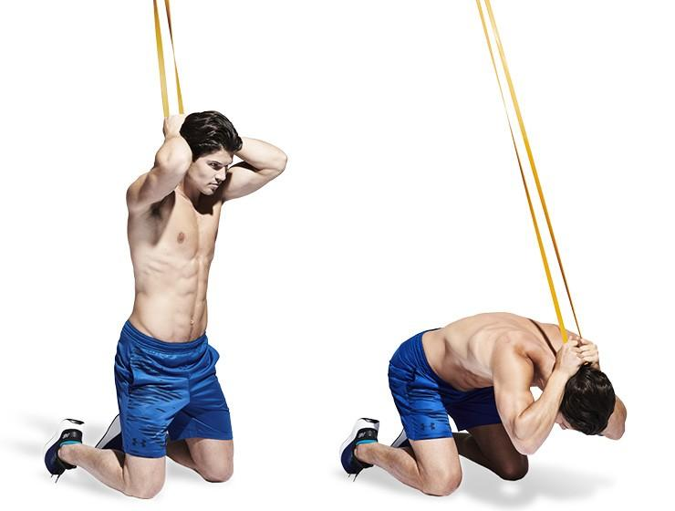
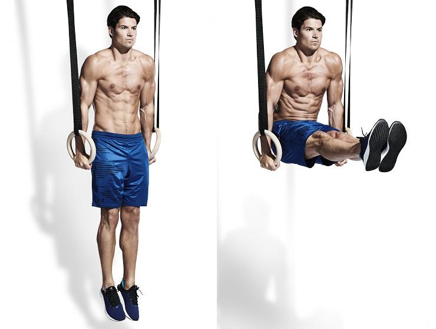
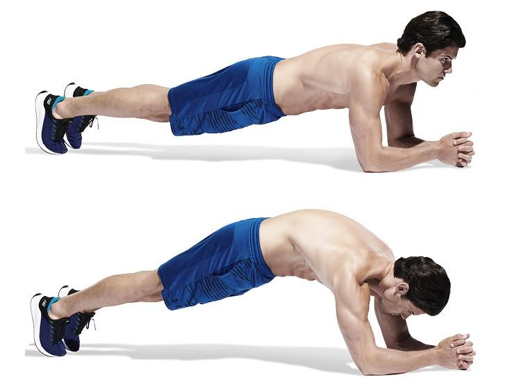

Mięśnie brzucha znajdują się w centrum naszego ciała i bez naszej świadomości biorą udział w każdej czynności ruchowej związanej z lokomocją lub ćwiczeniami z wolnym ciężarem. Łączą górną część ciała z dolną. Ich podstawowe zadania to stabilizacja i utrzymanie prostej sylwetki.
Ćwiczenia przedstawione poniżej mają za zadanie wzmocnić nasze mięśnie oraz pomóc w dążeniu do ich kształtowania.
Zamocuj mocną gumę oporową do drążka i uklęknij, trzymając ją oburącz za głową (A). Napnij brzuch i wykonaj skłon, aż łokciami dotkniesz kolan (B). Zatrzymaj na moment ruch i powoli się wyprostuj. Guma sprawia, że właściwie nie ma w tym ćwiczeniu chwili odpoczynku.
Zacznij od wyprostowanej pozycji na kółkach z ramionami po bokach ciała (A). Niestabilność sprawi, że będzie pracowało całe ciało. Powoli unieś wyprostowane nogi, aż będą równoległe do podłoża (B). Powoli wróć do pozycji startowej.
Zacznij od pozycji klasycznej deski na przedramionach (A). Ale zamiast tylko ją utrzymywać, zwiększ trudność, wyginając plecy w łuk z maksymalnym napięciem brzucha i pośladków (B). Spróbuj wytrzymać tak 15 sekund, a potem odpoczywaj do pełnej minuty.
Autor strony: 0000000000